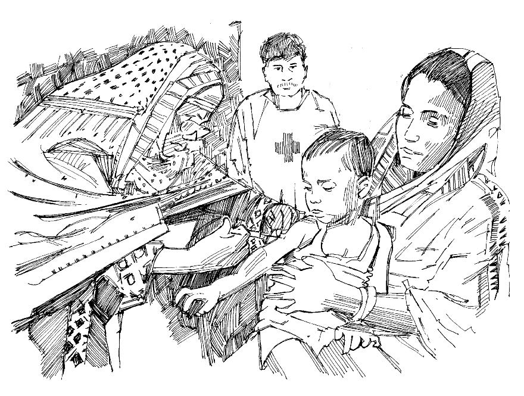

Resumen
- Una campaña de vacunación masiva ocurre cuando las autoridades administran las vacunas a la mayor cantidad posible de personas (apropiadas) en un período corto.
- Las vacunaciones masivas se realizan además de las vacunas de rutina (consulte la herramienta de acción 24). Estas pueden organizarse porque no se pueden administrar vacunas de rutina o para ayudar a controlar una epidemia.
- Las vacunaciones masivas son aún más importantes en algunos tipos de epidemia porque ayudan a proteger a los niños vulnerables.
Voluntarios
Normalmente, los voluntarios no administran vacunas directamente a los niños, pero usted puede ayudar de muchas otras maneras.
- La tarea más importante es la MOVILIZACIÓN SOCIAL (ver la herramienta de acción 43).
- Coordine con las autoridades sanitarias.
- Utilice la red de la Sociedad Nacional para dar a conocer las campañas de vacunación masiva. Ayude a organizarlos con la logística.
¿Cómo ayudar con las vacunas?
- Asegúrese de tener toda la información relevante y sepa dónde y cuándo se está llevando a cabo la campaña de vacunación y quién debe vacunarse.
- Averigüe los motivos de la vacunación y los datos básicos sobre la enfermedad que la vacunación evitará.
- Familiarícese con los hábitos y creencias de los miembros de su comunidad y con la forma en que normalmente tratan las vacunas.
- Conozca a los líderes de la comunidad y cuénteles acerca de la campaña; logre que ayuden a alcanzar a la comunidad.
- Hable con los miembros de la comunidad y explique cuán importante es la vacunación para proteger a sus hijos.
- Si algunos miembros de la comunidad tienen miedo de las vacunas, ayude a los trabajadores de la comunidad a calmar y eliminar sus temores. Corrija los rumores y la desinformación sobre las vacunaciones.
- Ayude a los trabajadores de salud a garantizar que todas las personas en riesgo sean vacunadas, incluso en áreas de difícil acceso.
- Utilice mensajes simples y directos.
- Use información, educación y materiales de comunicación, como las tarjetas de mensajes de la comunidad en esta Caja de herramientas, porque las imágenes siempre ayudan a las personas a comprender mejor los mensajes.

Campaña de vacunación masiva